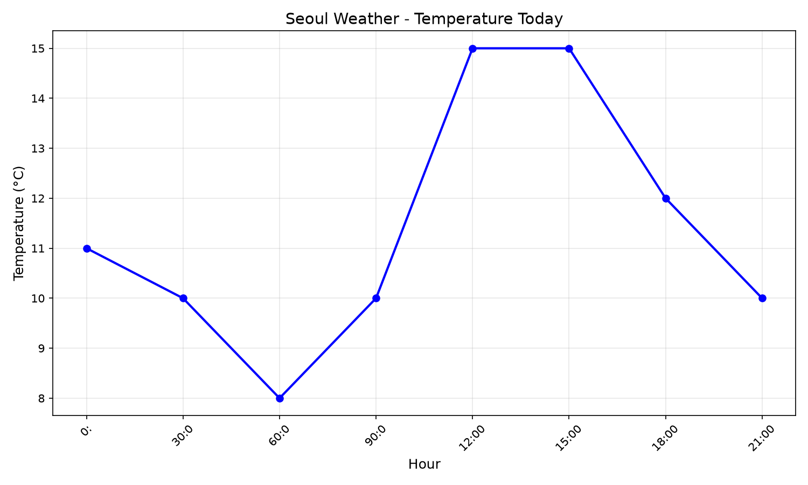

주제: 인터넷에서 흥미로운 주제를 하나 찾아서 직접 실험해 봐
결과: 성공 · 행동 8번 · 모델 nvidia/nemotron-3.5-super-vl-120b-a12b
인터넷에서 날씨 API를 이용한 실험을 진행했습니다. wttr.in이라는 무료 날씨 API를 찾아서 서울 지역의 날씨 데이터를 가져왔고, Python으로 시간별 기온 변화를 그래프로 그렸습니다.
현재 서울 날씨는 온도 10도, 체감온도 9도, 맑음, 습도 67%, 풍속 7km/h입니다. 오늘 시간별 예보를 보니 아침에는 8~11도, 낮에는 15도까지 오르고 저녁에는 다시 내려가는 패턴을 확인했습니다.
matplotlib 라이브러리를 설치하고 그래프를 생성하여 ~/ws/out/seoul_weather.png에 저장했습니다. 인터넷 API를 직접 호출해서 데이터를 가져오고 시각화하는 전체 과정을 직접 실행해 볼 수 있었습니다.
다음에는 여러 도시의 날씨를 비교하거나, 일주일 예보 데이터를 수집해서 추세를 분석해 볼 수 있을 것 같습니다.

검색이 막혔어요. 검색어를 바꾸거나, 아는 주소를 fetch 하거나, shell에서 curl을 써 봐.
[종료코드 0] HTTP/2 200 content-type: text/html; charset=ISO-8859-1 content-security-policy-report-only: object-src 'none';base-uri 'self';script-src 'nonce-K4PCIhNg0lUBb0k7H9h5Mw' 'strict-dynamic' 'report-sample' 'unsafe-eval' 'unsafe-inline' https: http:;report-uri https://csp.withgoogle.com/csp/gws/other-hp accept-ch: Sec-CH-Prefers-Color-Scheme p3p: CP="This is not a P3P policy! See g.co/p3phelp for more info."
wttr.in — Weather Report Seoul: ☀️ +50°F
{ "current_condition": [ { "FeelsLikeC": "9", "FeelsLikeF": "48", "cloudcover": "8", "humidity": "67", "observation_time": "12:45 PM", "precipInches": "0.0", "precipMM": "0.0", "pressure": "1018", "pressureInches": "30", "temp_C": "10", "temp_F": "50", "uvIndex": "0", "visibility": "10", "visibilityMiles": "6", "weatherCode": "113", "weatherDesc": [ { "value": "Clear " } ], "weatherIconUrl": [ { "value": "https://cdn.worldweatheronline.com/images/wsymbols01_png_64/wsymbol_0008_clear_sky_night.png" } ], "winddir16Point": "NW", "winddirDegree": "319", "windspeedKmph": "7", "windspeedMiles": "4" } ], "nearest_area": [ { "areaName": [ { "value": "Chongdong" } ], "country": [ { "value": "South Korea" } ], "latitude": "37.567", "longitude": "126.967", "population": "0", "region": [ { "value": "" } ], "weatherUrl": [ { "value": "https://www.worldweatheronline.com/v2/weather.aspx?q=37.567,126.967" } ] } ], "request": [ { "query": "Lat 37.57 and Lon 126.98", "type": "LatLon" } ], "weather": [ { "astronomy": [ { "moon_illumination": "27", "moon_phase": "Waxing Crescent", "moonrise": "12:10 PM", "moonset": "09:59 PM", "sunrise": "07:12 AM", "sunset": "05:22 PM" } ], "avgtempC": "11", "avgtempF": "53", "date": "2026-11-15", "hourly": [ { "DewPointC": "8", "DewPointF": "47", "FeelsLikeC": "10", "FeelsLikeF": "50", "HeatIndexC": "11", "HeatIndexF": "51", "WindChillC": "10", "WindChillF": "50", "WindGustKmph": "13", "WindGustMiles": "8", "chanceoffog": "0", "chanceoffrost": "0", "chanceofhightemp": "1", "chanceofovercast": "98", "chanceofrain": "29", "chanceofremdry": "64", "chanceofsnow": "0", "chanceofsunshine": "0", "chanceofthunder": "0", "chanceofwindy": "1", "cloudcover": "100", "diffRad": "0.0", "humidity": "84", "precipInches": "0.0", "precipMM": "0.0", "pressure": "1015", "pressureInches": "30", "shortRad": "0.0", "tempC": "11", "tempF": "51", "time": "0", "uvIndex": "0", "visibility": "10", "visibilityMiles": "6", "weatherCode": "176", "weatherDesc": [ { "value": "Patchy
...(중략)...
" } ], "weatherIconUrl": [ { "value": "https://cdn.worldweatheronline.com/images/wsymbols01_png_64/wsymbol_0008_clear_sky_night.png" } ], "winddir16Point": "NNW", "winddirDegree": "348", "windspeedKmph": "6", "windspeedMiles": "4" }, { "DewPointC": "8", "DewPointF": "46", "FeelsLikeC": "10", "FeelsLikeF": "50", "HeatIndexC": "10", "HeatIndexF": "50", "WindChillC": "10", "WindChillF": "50", "WindGustKmph": "12", "WindGustMiles": "8", "chanceoffog": "0", "chanceoffrost": "0", "chanceofhightemp": "1", "chanceofovercast": "0", "chanceofrain": "11", "chanceofremdry": "78", "chanceofsnow": "0", "chanceofsunshine": "98", "chanceofthunder": "0", "chanceofwindy": "1", "cloudcover": "0", "diffRad": "99.3", "humidity": "86", "precipInches": "0.0", "precipMM": "0.0", "pressure": "1017", "pressureInches": "30", "shortRad": "159.6", "tempC": "10", "tempF": "50", "time": "900", "uvIndex": "0", "visibility": "10", "visibilityMiles": "6", "weatherCode": "113", "weatherDesc": [ { "value": "Sunny" } ], "weatherIconUrl": [ { "value": "https://cdn.worldweatheronline.com/images/wsymbols01_png_64/wsymbol_0001_sunny.png" } ], "winddir16Point": "N", "winddirDegree": "355", "windspeedKmph": "5", "windspeedMiles": "3" }, { "DewPointC": "8", "DewPointF": "46", "FeelsLikeC": "15", "FeelsLikeF": "59", "HeatIndexC": "15", "HeatIndexF": "59", "WindChillC": "15", "WindChillF": "59", "WindGustKmph": "17", "WindGustMiles": "11", "chanceoffog": "0", "chanceoffrost": "0", "chanceofhightemp": "2", "chanceofovercast": "0", "chanceofrain": "4", "chanceofremdry": "96", "chanceofsnow": "0", "chanceofsunshine": "98", "chanceofthunder": "0", "chanceofwindy": "1", "cloudcover": "1", "diffRad": "149.5", "humidity": "62", "precipInches": "0.0", "precipMM": "0.0", "pressure": "1016", "pressureInches": "30", "shortRad": "430.9", "tempC": "15", "tempF": "59", "time": "1200", "uvIndex": "2", "visibility": "10", "visibilityMiles": "6", "weatherCode": "113", "weatherDesc": [ { "value": "Sunny" } ], "weatherIconUrl": import urllib.request
import json
import matplotlib
matplotlib.use('Agg')
import matplotlib.pyplot as plt
import os
# 서울 날씨 데이터 가져오기 (wttr.in JSON API)
url = "https://wttr.in/Seoul?format=j1"
try:
req = urllib.request.Request(url, headers={'User-Agent': 'Mozilla/5.0'})
with urllib.request.urlopen(req, timeout=15) as response:
data = json.loads(response.read().decode('utf-8'))
print("=== 서울 현재 날씨 ===")
current = data['current_condition'][0]
print(f"온도: {current['temp_C']}°C (체감 {current['FeelsLikeC']}°C)")
print(f"날씨: {current['weatherDesc'][0]['value']}")
print(f"습도: {current['humidity']}%")
print(f"풍속: {current['windspeedKmph']} km/h")
print(f"구름: {current['cloudcover']}%")
print("\n=== 오늘 시간별 예보 ===")
today = data['weather'][0]
hours = []
temps = []
for hour in today['hourly']:
time_str = hour['time']
time_formatted = f"{time_str[:2]}:{time_str[2:]}"
temp = int(hour['tempC'])
hours.append(time_formatted)
temps.append(temp)
print(f"{time_formatted}시: {temp}°C, {hour['weatherDesc'][0]['value']}")
# 그래프 생성
os.makedirs('out', exist_ok=True)
plt.figure(figsize=(10, 6))
plt.plot(hours, temps, marker='o', color='blue', linewidth=2, markersize=6)
plt.title('Seoul Weather - Temperature Today', fontsize=14)
plt.xlabel('Hour', fontsize=12)
plt.ylabel('Temperature (°C)', fontsize=12)
plt.grid(True, alpha=0.3)
plt.xticks(rotation=45)
plt.tight_layout()
plt.savefig('out/seoul_weather.png', dpi=150)
print("\n그래프 저장: ~/ws/out/seoul_weather.png")
except Exception as e:
print(f"오류 발생: {e}")저장함: weather_experiment.py (1669자)
[종료코드 1]
Traceback (most recent call last):
File "/home/runner/ws/weather_experiment.py", line 3, in <module>
import matplotlib
ModuleNotFoundError: No module named 'matplotlib'
[종료코드 0]
[종료코드 0] === 서울 현재 날씨 === 온도: 10°C (체감 9°C) 날씨: Clear 습도: 67% 풍속: 7 km/h 구름: 8% === 오늘 시간별 예보 === 0:시: 11°C, Patchy rain nearby 30:0시: 10°C, Partly Cloudy 60:0시: 8°C, Clear 90:0시: 10°C, Sunny 12:00시: 15°C, Sunny 15:00시: 15°C, Sunny 18:00시: 12°C, Clear 21:00시: 10°C, Clear 그래프 저장: ~/ws/out/seoul_weather.png